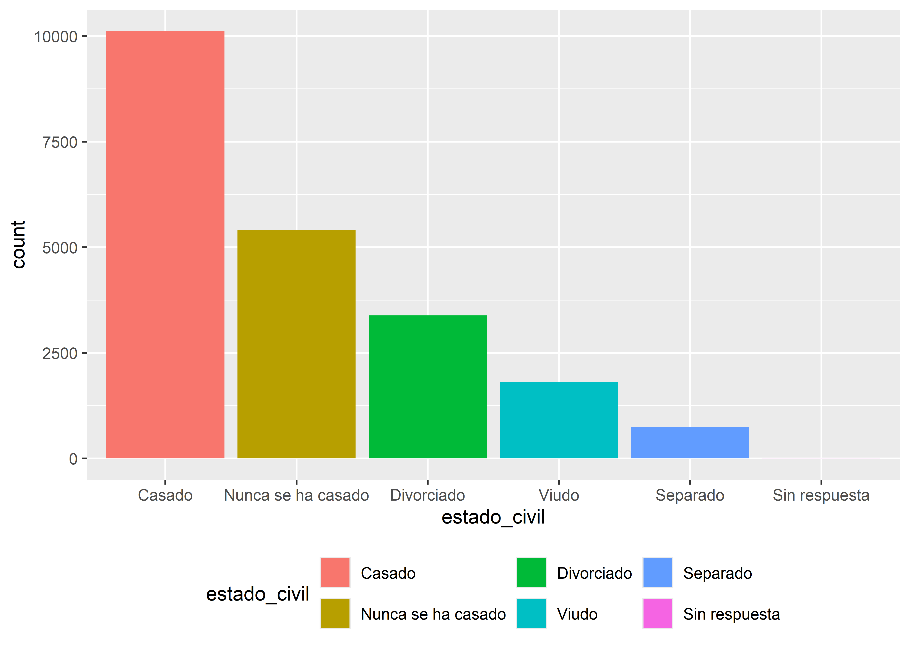

nombre_funcion <- function(variables) {
< cuerpo de la función >
} Creación de funciones en R
Una de las ventajas de usar lenguajes abiertos como el R es poder crear funciones.
Las funciones nos permiten automatizar tareas comunes de una manera más potente y general que copiar y pegar.
Escribir una función tiene tres grandes ventajas sobre usar copiar y pegar:
A medida que cambian los requisitos, solo necesitamos actualizar el código en un solo lugar.
Elimina la posibilidad de cometer errores incidentales al copiar y pegar (es decir, actualizar el nombre de una variable en un lugar, pero no en otro).
Facilita la reutilización del trabajo de un proyecto a otro, aumentando su productividad con el tiempo.
Si bien hay muchas tareas que puede hacer una función, existen tres tipos muy útiles:
Funciones vectoriales que toman uno o más vectores como entrada y devuelven un vector como salida.
Funciones de tablas de datos que toman un dataframe como entrada y devuelven un dataframe como salida.
Funciones gráficas que toman un dataframe como entrada y devuelven un gráfico como salida.
Esqueleto de una función
Cualquier función construida en R tiene una estructura o esqueleto similar, no importa lo que haga cuando la ejecutemos.
Todas ellas tienen:
Un nombre, que deberá cumplir con las caraterísticas que nos impone el lenguaje para nombres (no debe comenzar con un número, no debe utilizar palabras reservadas del lenguaje, no debe tener espacios entre los caracteres, etc.)
Argumentos, puede no haber o haber varios, dependiendo de lo que se necesite para que la función trabaje. Van encerrados entre paréntesis y separados por coma.
Un cuerpo, donde se desarrolla el código en cuestión, que se va a repetir cada vez que llamemos a la función. Este código deberá ser una abstracción generalizada de la solución al problema que abordemos para lograr que funcione en cualquier situación.
La sintaxis de creación en R es:
donde:
- nombre_funcion: es el nombre que le queremos dar a la función creada
- function(): es la palabra reservada por el lenguaje para crear funciones
- variables: es el espacio donde se declaran el o los argumentos con los que trabajemos. Puede, en ocasiones, no haber ninguno.
- {}: entre estas llaves se encuentra el cuerpo de la función
Funciones vectoriales
Para explicar su funcionamiento hagamos un ejemplo sencillo:
Supongamos que una labor habitual en nuestro trabajo sea convertir en años la diferencia entre dos fechas, por ejemplo entre la fecha de nacimiento y otra, para calcular la edad.
Queremos construir una función que realice este trabajo, recibiendo dos fechas como vectores y devolviendo una cantidad de años como vector.
Recurriendo a la documentación de semanas anteriores se puede ver que ejecutando la siguiente línea con funciones de lubridate se podía obtener los años en número entero:
interval(fecha_nacimiento, fecha)%/% dyears()Usemos eso para crear la función, a la que podemos llamar calculo_edad. Además le vamos a incorporar en la primera línea la activación del paquete lubridate, que necesitaremos dentro del cuerpo de la función. Para esta tarea, en lugar de library() usaremos require().
calculo_edad <- function(fecha_nacimiento, fecha) {
require(lubridate)
interval(fecha_nacimiento, fecha)%/% dyears()
}Para probar la función creada, la aplicamos a unos datos.
datos# A tibble: 2 × 2
FECNAC FECREG
<date> <date>
1 1954-05-23 2023-08-17
2 2003-01-24 2023-12-04Esta tabla tiene dos variables de tipo Date con dos observaciones de fecha, en la primera la fecha de nacimiento y en la segunda la fecha de registro. Para crear la nueva variable Edad pondremos dentro de un mutate() la función calculo_edad escrita anteriormente.
datos |>
mutate(Edad = calculo_edad(fecha_nacimiento = FECNAC, fecha = FECREG))# A tibble: 2 × 3
FECNAC FECREG Edad
<date> <date> <dbl>
1 1954-05-23 2023-08-17 69
2 2003-01-24 2023-12-04 20Observemos que nos calcula la edad como queríamos y que los nombres de las variables con los datos no importa que no coincidan con los nombres internos definidos en los argumentos.
Que otras consideraciones tenemos que tener en cuenta para que funcione bien? Por ejemplo que las fechas ya estén en formato Date. Que pasará si esto no sucede y son de tipo character:
datos# A tibble: 2 × 2
FECNAC FECREG
<chr> <chr>
1 23/05/1954 17/08/2023
2 24/01/2003 04/12/2023datos |>
mutate(Edad = calculo_edad(FECNAC, FECREG))Warning: There were 2 warnings in `mutate()`.
The first warning was:
ℹ In argument: `Edad = calculo_edad(FECNAC, FECREG)`.
Caused by warning:
! All formats failed to parse. No formats found.
ℹ Run `dplyr::last_dplyr_warnings()` to see the 1 remaining warning.# A tibble: 2 × 3
FECNAC FECREG Edad
<chr> <chr> <dbl>
1 23/05/1954 17/08/2023 NA
2 24/01/2003 04/12/2023 NANos devuelve valores NA en Edad producto de un error esperable porque la función interval(), que escribimos dentro de nuestra función, necesita que los valores de fecha sean de tipo Date o date-time.
Entonces podemos complejizar el cuerpo del código agregando algo para que resuelva este problema:
calculo_edad <- function(fecha_nacimiento, fecha) {
require(lubridate)
if (is.character(fecha_nacimiento)) {
fecha_nacimiento <- dmy(fecha_nacimiento)
}
if (is.character(fecha)) {
fecha <- dmy(fecha)
}
interval(fecha_nacimiento, fecha)%/% dyears()
}Volvemos a correr la función sobre los datos con las variables en formato character:
datos |>
mutate(Edad = calculo_edad(FECNAC, FECREG))# A tibble: 2 × 3
FECNAC FECREG Edad
<chr> <chr> <dbl>
1 23/05/1954 17/08/2023 69
2 24/01/2003 04/12/2023 20Ahora funciona bien pero así como solucionamos el tema del tipo de dato podríamos enfrentarnos a otros más, como la estructura de la fecha (si es dmy o mdy o ymd) o si el paquete lubridate no se encuentra instalado en mi sesión de R, etc.
Generalmente para que una función se pueda aplicar generalizadamente, como suelen ser las funciones de los paquetes publicados, necesitaremos que tenga controladas sus salidas de error lo mejor posible.
Que vimos hasta ahora de nuevo en el código previo:
Función
require()en lugar delibrary(): hacen lo mismo (activar un paquete) pero es preferiblerequire()porque si un paquete no está instalado solo generará una advertencia y luego continuará ejecutando el código.Función
if(): es la función condicional, hermana deifelse(), que conviene utilizar en casos donde ante una condición debemos tomar caminos diferentes. Se suelen usar en cuerpos de funciones y dentro de bucles tradicionales.
Una posibilidad para manejar errores por falta de instalación de paquetes es agregar una línea inicial con un condicional que consulte si la librería lubridate se encuentra instalada, y si no es así que la instale previamente.
calculo_edad <- function(fecha_nacimiento, fecha) {
if (!"lubridate" %in% installed.packages()) {
install.packages("lubridate")
}
require(lubridate)
if (is.character(fecha_nacimiento)) {
fecha_nacimiento <- dmy(fecha_nacimiento)
}
if (is.character(fecha)) {
fecha <- dmy(fecha)
}
interval(fecha_nacimiento, fecha)%/% dyears()
}Funciones de tablas de datos
Recordemos que las funciones de tablas de datos funcionan como funciones-verbos dplyr: toman un dataframe como primer argumento, algunos argumentos adicionales que dicen qué hacer con él y devuelven generalmente un dataframe.
A diferencia del proceso para funciones vectoriales, donde los nombre de las funciones declaradas en los argumento eran reemplazados por cualquier otro nombre de las variables externas de la función, aquí necesitamos utilizar unos operadores de evaluación especiales.
Se denomina “embracing” (abrazar) una variable al hecho de envolverla entre llaves {{ nombre_variable }}.
Abrazar una variable le dice a dplyr que use el valor almacenado dentro del argumento y no el argumento como el nombre “literal” de la variable.
Veamos un ejemplo de este tipo de funciones:
Creamos una función que realice un resumen de variables cuantitativas, calculando su mínimo, máximo, media, mediana, cantidad de NA y cantidad de observaciones totales.
resumen <- function(datos, var) {
if (!"dplyr" %in% installed.packages()) {
install.packages("dplyr")
}
require(dplyr)
datos |> summarise(
min = min({{ var }}, na.rm = TRUE),
media = mean({{ var }}, na.rm = TRUE),
mediana = median({{ var }}, na.rm = TRUE),
max = max({{ var }}, na.rm = TRUE),
n = n(),
n_NA = sum(is.na({{ var }}))
)
}Lo aplicamos sobre la variable Edad de unos datos de prueba.
datos |> resumen(Edad)# A tibble: 1 × 6
min media mediana max n n_NA
<dbl> <dbl> <dbl> <dbl> <int> <int>
1 18 58.6 62.5 99 67 5Observemos que el código principal del cuerpo de la función tiene una estructura tidyverse con funciones propias de dplyr y R base, donde el nombre de la variable declarada en los argumentos (var) se encuentra abrazada por las llaves.
datos |> summarise(
min = min({{ var }}, na.rm = TRUE),
media = mean({{ var }}, na.rm = TRUE),
mediana = median({{ var }}, na.rm = TRUE),
max = max({{ var }}, na.rm = TRUE),
n = n(),
n_NA = sum(is.na({{ var }}))
)La función también se puede aplicar combinada con un agrupamiento (group_by()).
datos |>
group_by(Sexo) |>
resumen(Edad)# A tibble: 2 × 7
Sexo min media mediana max n n_NA
<chr> <dbl> <dbl> <dbl> <dbl> <int> <int>
1 Mujer 18 55.7 57 93 31 2
2 Varon 19 61.1 63 99 36 3Funciones para gráficos
Las funciones para gráficos son muy parecidas a las de tablas de datos, dado que utilizamos funciones de ggplot2 para graficar. La única diferencia es que la salida es un gráfico en lugar de un dataframe.
Vamos a ejemplificar creando un gráfico de barras para aprovechar a introducir un nuevo operador, necesario cuando queremos reutilizar el nombre de una variable definida por el usuario que aplica la función a la izquierda de una asignación de argumentos de tidyverse.
El nuevo operador, llamada morsa, se escribe := y significa igual (=). Veamoslo en acción:
if (!"tidyverse" %in% installed.packages()) {
install.packages("tidyverse")
}
require(tidyverse)
barras_ordenadas <- function(datos, var) {
datos |>
mutate({{ var }} := fct_infreq({{ var }})) |>
ggplot(aes(x = {{ var }}, fill = {{ var }})) +
geom_bar() +
theme(legend.position = "bottom")
}Observemos que en la línea en que usamos el mutate(), el interprete espera que definamos literalmente el nombre de la variable que recibe la operación fct_infreq() y para que esta sea igual a la variable ingresada es útil el operador morsa. (sino nos devuelve Error)
Aplicado a una variable cualitativa con varias categorías nos genera:
library(datos) # activamos el paquete datos para usar el dataset encuesta
encuesta |> barras_ordenadas(estado_civil)
Importar funciones propias
Una de características más interesantes de las funciones creadas es que las podemos introducir en un script que llamaremos en nuestro sesión cada vez que necesitemos ejecutarlas.
La función source() nos permite llamar a ese o esos scripts externos y contar con las funciones a nuestra disposición.
Entonces podemos automatizar algunas tareas, sobre todo en procesos repetitivos o que tienen un mismo procedimiento. Un ejemplo concreto en la epidemiología son las tareas vinculadas al análisis de datos provenientes de la vigilancia epidemiológica.
La forma de hacerlo es sencilla, si mi script de funciones se llama “funciones.R” ejecutamos:
source("funciones.R")Cada vez que lo hagamos dentro del script de trabajo tendremos a disposición todas las funciones que se encuentran declaradas dentro del archivo “funciones.R”.